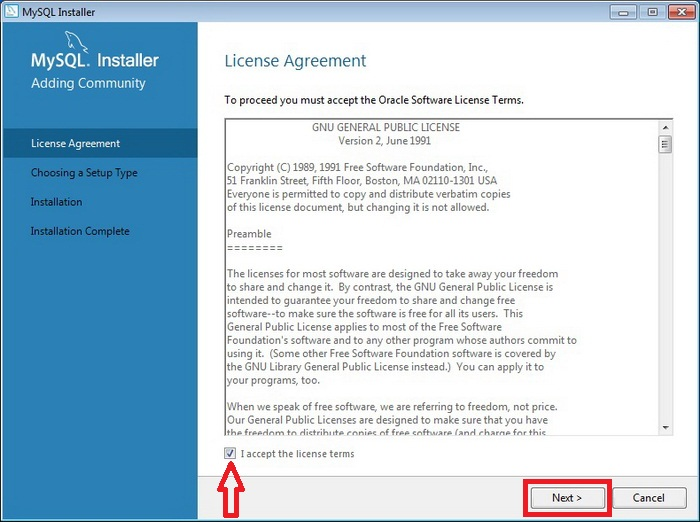
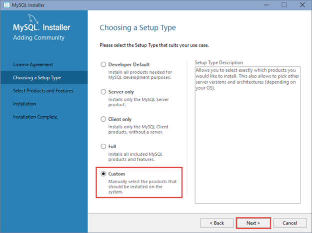
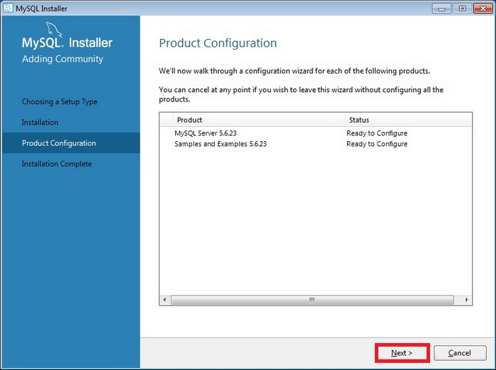
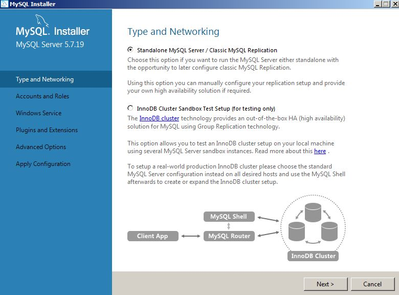
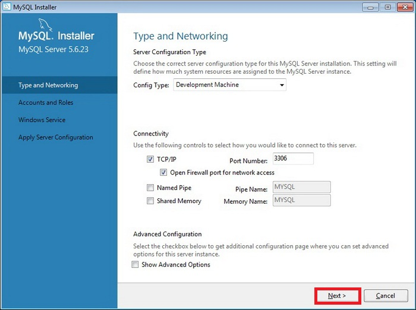
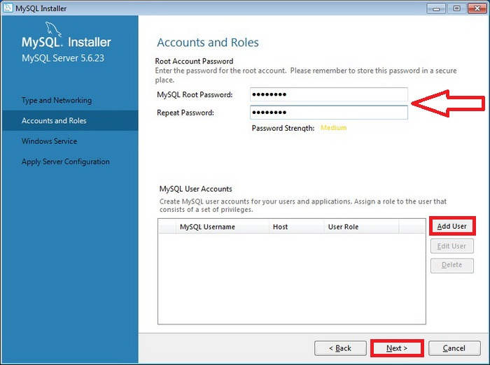

В действительности установщик и для x86 и для x64 архитектуры.
STEP 1
Запускаем файл установки mysql-installer-community-5.7.19.0. И первое что делает это соглашаемся с условиями лицензии.

Лицензионное соглашение
STEP 2. Тип установки
MySQL Installer предоставляет следующий вид установки

Тип установки
Developer Default
Установка всех необходимых компонетов для разработчика.
MySQL Server - система управления базой данных
MySQL Shell - новое клиентское приложение для управдения базой данных MySQL и кластерной системой InnoDB
MySQL Router - демон маршрутизации для кластерной системы InnoDB.
MySQL Workbench - инструмент для визуального проектирования баз данных.
MySQL for Excel - Excel плагин для доступа и упавления данными MySQL.
MySQL for Visual Studio
MySQL Connectors - базовые драйверы, позволяющие разработчикам создавать приложения баз данных на своем языке.
Examples and tutorials
Documentation
Server only
Установка только сервера.
Client only
Установка только клиентской части, без сервера.
MySQL Shell
MySQL Router
MySQL Workbench
MySQL for Excel
MySQL for Visual Studio
MySQL Connectors
Examples and tutorials
Documentation
Full
Полная установка всего пакета программного обеспечения.
Installs all of the products available in this catalog including MySQL Server, MySQL Shell, MySQL Router, MySQL Workbench, MySQL Connectors, documentation, samples and examples and much more.
Custom
Самостоятельный выбор необходимых компонентов.
Выбрав необходимые компонеты жмём Next
STEP 3
Список устанавливаемых компонентов.
Если всё правльно жмём ExecuteПроцесс установки, по завершению которого жмём Next
STEP 4
Настройка компонетов

Настройка компонетов жмём Next
Первым делом выбираем пункт стандартный сервер

Настройка сервера
Тип сервера и его настройки оставляем без изменений

Тип сервера
Необходимо ввести пароль для root пользователя

Создание пользователей и пароля для root
Настроить MySQL как службу, но не запускать при загрузки операционной системы.
Запускать MySQL сервер как службу WindowsЖмём Next
Далее жмём Execute для сохранения настроек. По завершению жмём Finish
Применить конфигурацию
STEP 5
Настройка тестовых данных
Настройка тестовых данных
Подключаемся к серверу, жмем сначала Check затем Next
Настройка тестовых данныхНастройка тестовых данных
STEP 6
Всё, установка практически завершена, жмем Next
Завершение установки
А затем Finish, если оставить галку Start MySQL Workbench after Setup то сразу запустится программа MySQL Workbench